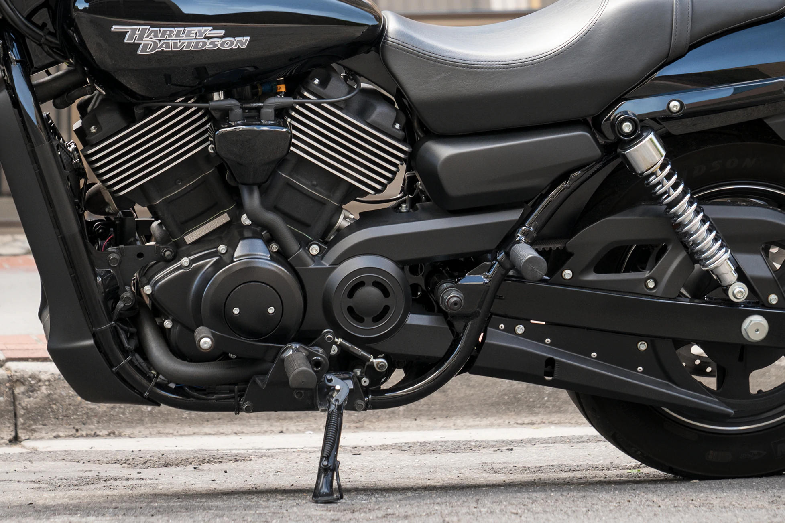

За темным кастомным исполнением скрывается двигатель Revolution X™ V-Twin 750 куб. см с жидкостным охлаждением.
Когда речь заходит о создании кастом-байков, знайте, что у вас есть единомышленники: это сотрудники вашего дилерского центра Harley-Davidson®. Они живут и дышат мотоциклами Harley-Davidson. И они могут помочь вам построить мотоцикл, подходящий под ваши задачи.
Затемненный V-Twin с жидкостным охлаждением создан для покорения плотного, интенсивного трафика бетонных джунглей. Вы можете положиться на плавный отклик дроссельной заслонки с прогрессивной тягой, «ныряя» на освободившееся в потоке место.
Продвинутая заводская ABS придаст вам уверенности — вы знаете, как поведет себя мотоцикл в различных ситуациях.
750 без усилий можно поднять с боковой подножки, благодаря небольшому весу и низкому центру тяжести мотоцикла. И отъехать от бордюра так же легко, как и нажать кнопку стартера.
Специально настроенные под вес мотоцикла, геометрию рамы и положение водителя. Вы по достоинству оцените плавность хода и отличную управляемость, выехав на городские улицы с неровным асфальтом.